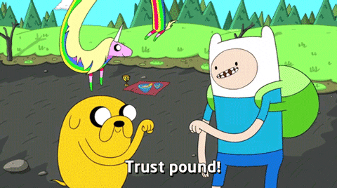

Design Process
Design for expectations, not pain points — make it personal, make it feel good, make it smart
If no one's unhappy, polishing the current experience won't make them pay more. The opportunity is in creating something they'd love to have. Personalization needs to be the foundation — adaptive, seamless, emotionally aware. And music should be treated as a tool for everyday well-being, not just entertainment.
That means smarter discovery that reads your mood and balances the familiar with the new — and AI that feels human, learning quietly and never getting in the way.
Design for the individual, keep AI transparent, reduce friction, and always let the user stay in control
I explored many directions — biometric detection, voice input, AI-initiated shifts, manual switching. After prototyping and testing, some ideas landed (Vibe Cards, automatic vs. manual modes) and others didn't (chat interfaces felt disconnected, detection was too effortful). The principles that survived: design for the individual, keep AI transparent, make it feel calm, give users control, and earn trust before asking for anything.
.gif)


User Expectation Map